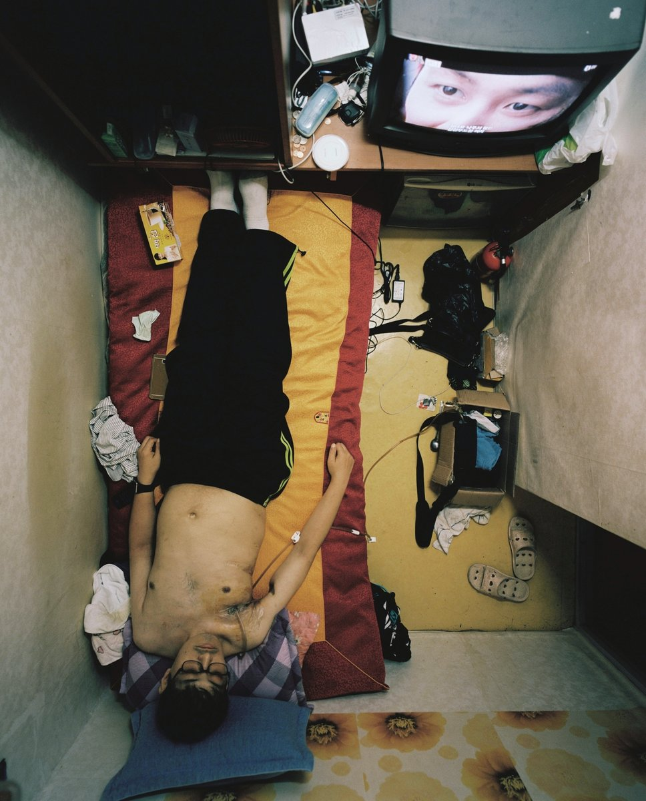
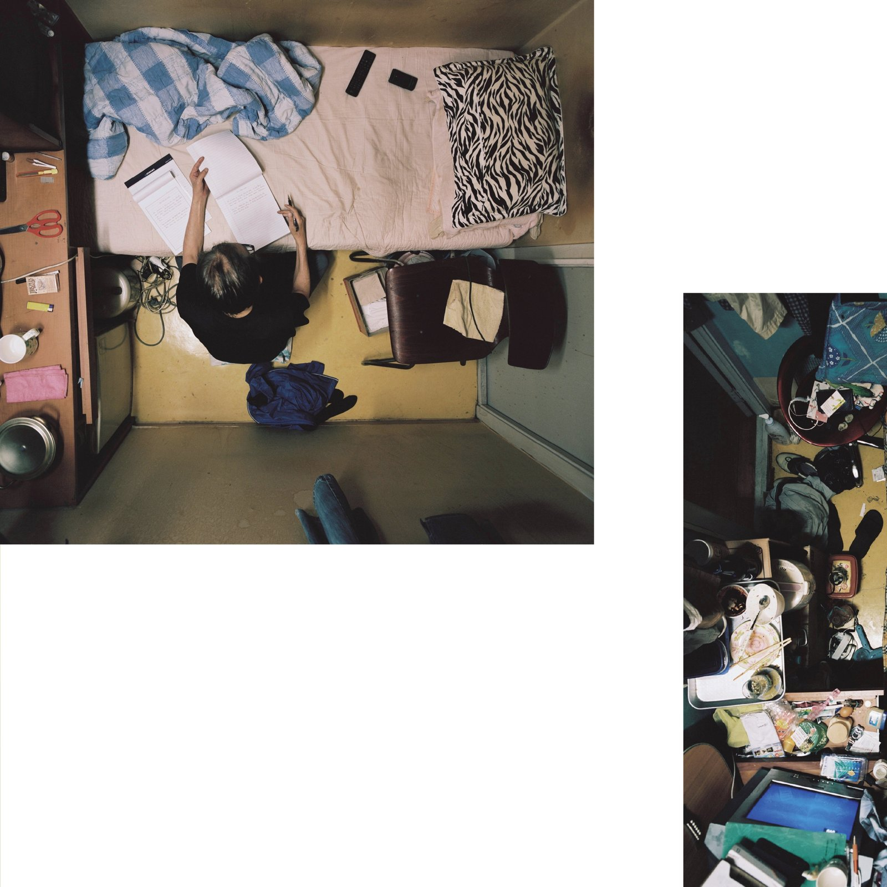
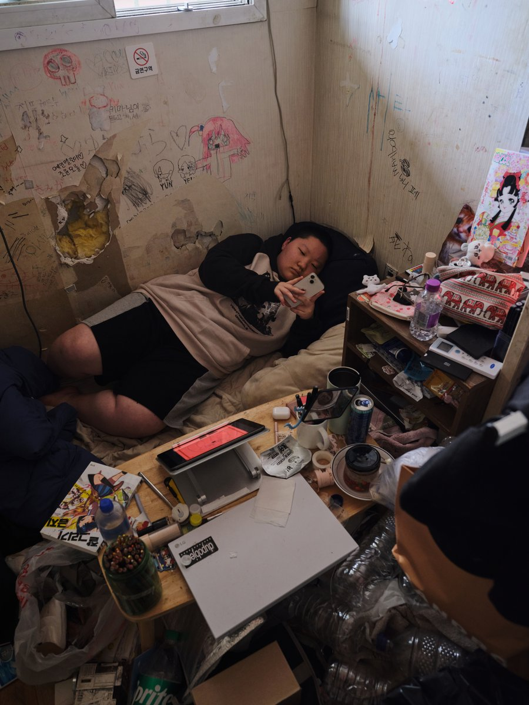
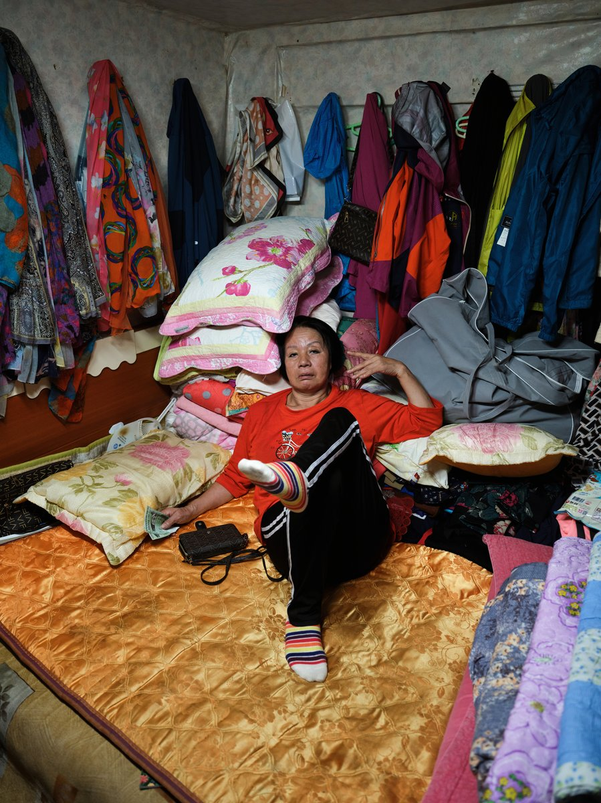
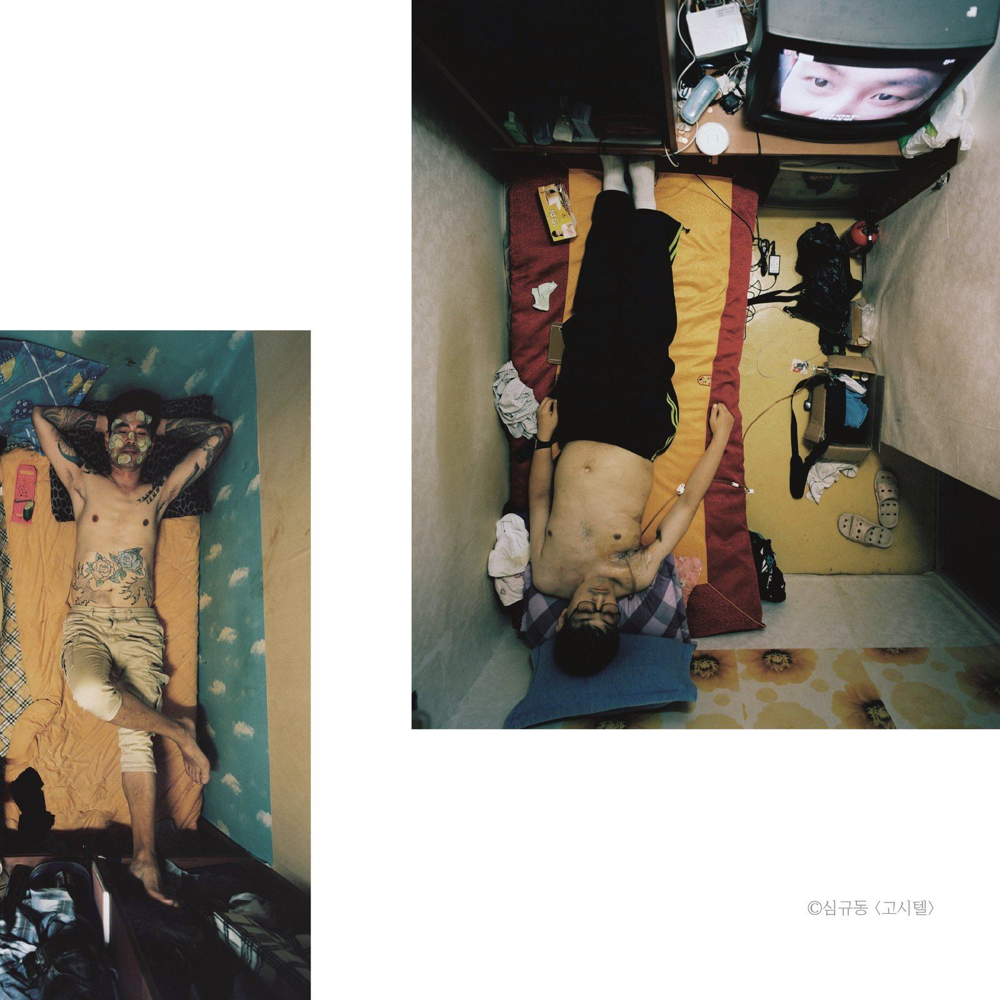
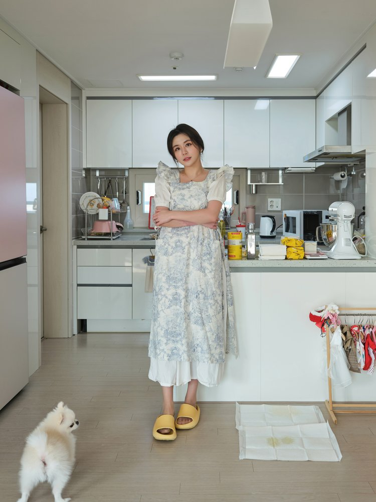

"자신의 삶을 만족하고 스스로의 선택으로 생각하는 사람들은 카메라 앞에서 자유로웠습니다."
창간호 인터뷰의 주인공은 사진작가 심규동이다. 2017년 사진 전문 출판사 '눈빛사진가선' 시리즈의 사진집 〈고시텔〉로 데뷔한 그는, 좁은 공간 안에서 살아가는 사람들의 모습을 정면으로 응시한 작가다. 이번 호 5ft.mag은 강릉에서 활동 중인 그를 만나 긴 대화를 나눴다.
왜 〈고시텔〉이었나
한 평 남짓한 방. 천장에 매달린 카메라가 위에서 내려다보는 듯한 시선. 그 안에서 누군가는 침대에 누워 있고, 누군가는 책을 읽고, 누군가는 카메라를 정면으로 응시한다. 〈고시텔〉 시리즈를 한 번 본 사람은 그 강렬한 구도를 잊기 어렵다.

매거진을 펼치면 그의 작품 세계가 차곡차곡 펼쳐진다. 〈고시텔〉뿐만 아니라 최근 진행 중인 〈1인가구〉 시리즈, 그리고 빛에 대한 그만의 철학까지. 우리는 그 중 일부 질문만 미리 공개한다.
'고시텔', '나 홀로 집에', 인물사진까지 모두 사람의 '삶'을 다루고 있는 것 같습니다. 작가님이 생각하는 '삶'이란 무엇인가요?
제가 생각하는 삶은 시대와 문화, 가족 등 처한 상황의 체험이라고 생각해요.
짧지만 묵직한 답이다. 그가 카메라로 담아내는 것은 단순한 풍경이나 사람의 외형이 아니라, 시대가 누군가에게 새긴 흔적 그 자체다. 그래서 〈고시텔〉의 사진들은 단순한 기록을 넘어선다.

"카메라 앞에서 자유로웠다"는 것
인터뷰에서 가장 인상적인 답 중 하나는, 〈고시텔〉을 촬영하는 1년 동안 어떤 사람은 삶을 힘들어했고 어떤 사람은 만족했다는 부분이다. 그리고 그 차이가 그대로 카메라 앞에서 드러났다고 한다.
고시텔 프로젝트를 진행하면서 삶을 힘들어하는 분도 있고 만족하는 분들도 있었다고 들었습니다. 그 차이는 어디에서 오는 걸까요?
그 차이는 개인을 이루는 가치관의 차이라고 생각해요. '나는 어떤 사람이야!'라고 규정되고, 그것을 충족하지 못했을 때 오는 자괴감이랄까요. 무의식이 관여하는 것으로 마음먹는다고 바뀌기 쉽지 않은 부분 같아요. 자신의 삶을 만족하고 스스로의 선택으로 생각하는 사람들은 카메라 앞에서 자유로웠습니다.
작가는 이 답변에 이어, 짧은 시간 안에 인물을 어떻게 담아내는지에 대한 자신만의 노하우를 풀어놓는다. 1년이라는 긴 시간이 주는 친밀감과, 짧은 시간 안에 진심을 끌어내는 방법은 어떻게 다른가. 그 이야기는 매거진에서 직접 만나보시길.
짧은 시간 안에 인물을 잘 담아내는 방법이나 철학이 있으신가요?
네 맞아요. 오랜 시간이 주는 친밀감은 다르죠. 하지만 너무 친한 것 또한 그 사람의 어느 특별한 부분을 담아내게 되는것 같아요. 장단점이 있죠. 짧은 시간에 인물을 촬영할 때 저의 노하우는 제가 가진 사진 철학에 관해 이야기를 하고 서로 이해하는 과정을 갖습니다...
〈1인가구〉, 새로운 시리즈
심규동 작가는 〈고시텔〉 이후에도 작업을 멈추지 않았다. 최근에는 〈1인가구〉라는 새 시리즈를 진행 중이다. 이번 호 매거진에서는 그가 직접 공개한 신작도 함께 만날 수 있다.


〈1인가구〉는 〈고시텔〉의 연장선 같으면서도 다르다. 작가는 말한다. "앞으로는 팬 굿즈 가득한 중년 여성, 부유한 1인 가구, 인플루언서, 코스프레 취미인 사람 등 이 시대의 초상을 아카이빙 하려고 해요."

빛, 그리고 필름
이번 호 5ft.mag의 주제는 "빛과 그림자가 남긴 여운". 인터뷰 후반부에는 작가의 빛에 대한 철학과 필름을 선택하는 이유에 대한 깊은 이야기가 이어진다. "사실 필름 촬영은 빛을 찍는다고 해도 과언이 아니에요"라고 그는 말했다.
필름으로 작업하는 것이 쉽지 않을 것 같은데, 필름을 고집하시는 이유가 있나요?
딱히 필름만 고집한건 아니에요. 장단점이 있고, 사진 작업에 따라 선택하는거 같아요. 고시텔 촬영할 때는 중형이어야 했고, 디지털 중형을 살 돈이 없었어요. 하지만 필름 중형카메라는 가능했죠...
작품에서 빛과 그림자를 활용하는 본인만의 방법이나 철학이 있나요?
저는 인공적인 빛을 좋아하지 않아요. 인공적인 빛은 태양광은 제외한 조명만 말하는 것이 아니에요. 이 시대에서 실내 전등은 자연스럽게 받아들여지죠. 태양광이 강한 도심 거리에서 건물에 반사된 빛도 조명처럼 보이지만 자연스럽다고 느껴져요...
그 외 매거진에서 만날 수 있는 이야기
이 인터뷰에는 우리가 미처 다 옮기지 못한 흥미로운 이야기들이 더 있다.
- ● 웨딩 사진과 다큐멘터리 사진 — 상반된 두 세계를 오가는 작가의 시선
- ● 2019년에 직접 만든 독립영화에 담은 메시지
- ● 꾸준한 작업을 가능하게 하는 영감의 원천
- ● 그가 사진을 시작하게 된 결정적 순간
- ● 선호하는 필름과 카메라, 그리고 그 이유

전체 인터뷰는 매거진에서
심규동 작가의 전체 인터뷰와 미공개 작품 사진들은 5ft.mag Vol.01 창간호에서 만나볼 수 있습니다.